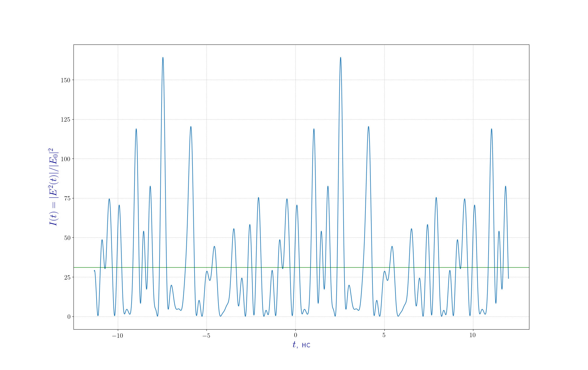
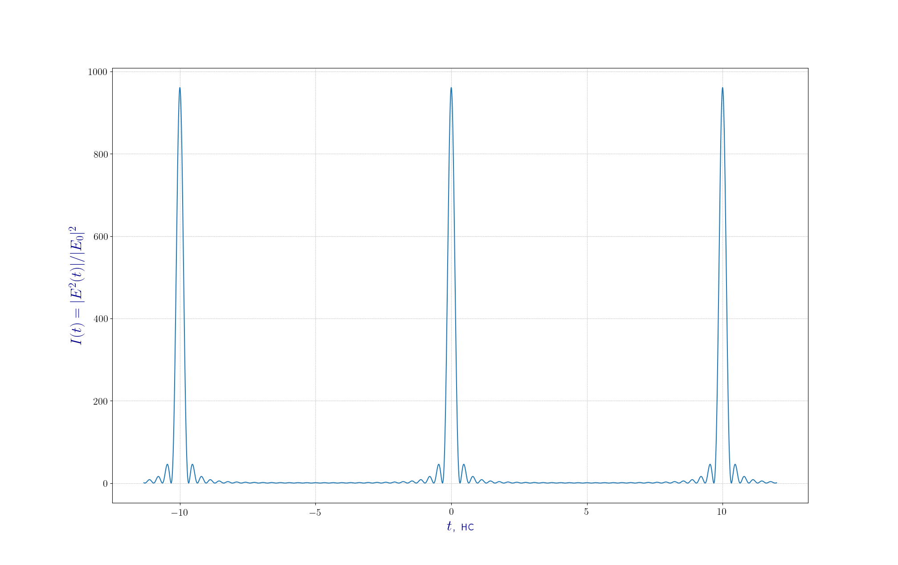

Синхронизация мод в твердотельном лазере YAg:Nd$^{3+}$
Сунцов Демид Андреевич
Илларионов Владислав Иванович
Теоретические основы синхронизации мод
Полное электрическое поле $E(t)$ электромагнитной волны в резонаторе с $2n+1$ поперечными модами
\[ E(t) = \sum_{l=-n}^n E_0 exp(i \omega_l t + \varphi_l)\]Условие синхронизации фаз
\[ \varphi_{l+1} - \varphi_{l} = \varphi = \text{const}, \quad l = -n, ..., n, \quad (\varphi_0 = 0) \] \[ E(t) = \sum\limits_{l = -n}^{n} E_0 \exp \left( i (\omega_0 + l \Delta \omega) t + l \varphi \right) \]В общем случае фазы $\varphi_l$ являются случайными величинами.
Теоретические основы синхронизации мод

Зависимость приведенной интенсивности $I(t) = |E(t)|^2/|E_0|^2$ от времени в неодимовом лазере Nd$^{3+}$:YAg.
Число мод $2n+1 = 31$. Межмодовое расстояние $\Delta \nu = 100$ МГц. Центральная частота $\nu = 2{,}82 \cdot 10^{14}$ Гц ($\lambda = 1{,}064$ мкм)
Теоретические основы синхронизации мод
Представление электрического поля в виде синусоиды с модулированной по времени амплитудой
\[ E(t) = A(t) \exp \left( i \omega_0 t \right), \quad A(t) = \sum\limits_{l = -n}^{n} E_0 \exp \left( i l ( \Delta \omega t + \varphi) \right) \]Замена переменных
\[\Delta \omega t' = \Delta \omega t + \varphi\]Сумма геометрической прорессии
\[A(t') = E_0 \frac{\sin((2n+1) \Delta \omega t' / 2)}{\sin(\Delta \omega t' / 2)}\]Теоретические основы синхронизации мод

Синхронизация мод в неодимовом лазере. Параметры лазера совпадают с параметрами,
использованными в зависимости $I(t)$ для случайного распределения мод.

Методы синхронизации мод
- активная синхронизация мод — потери или усиление в резонаторе модулируются внешним сигналом;
- пассивная синхронизация мод — внутрь резонатора помещается нелинейный оптический элемент, за счёт которого осуществляется синхронизация мод.